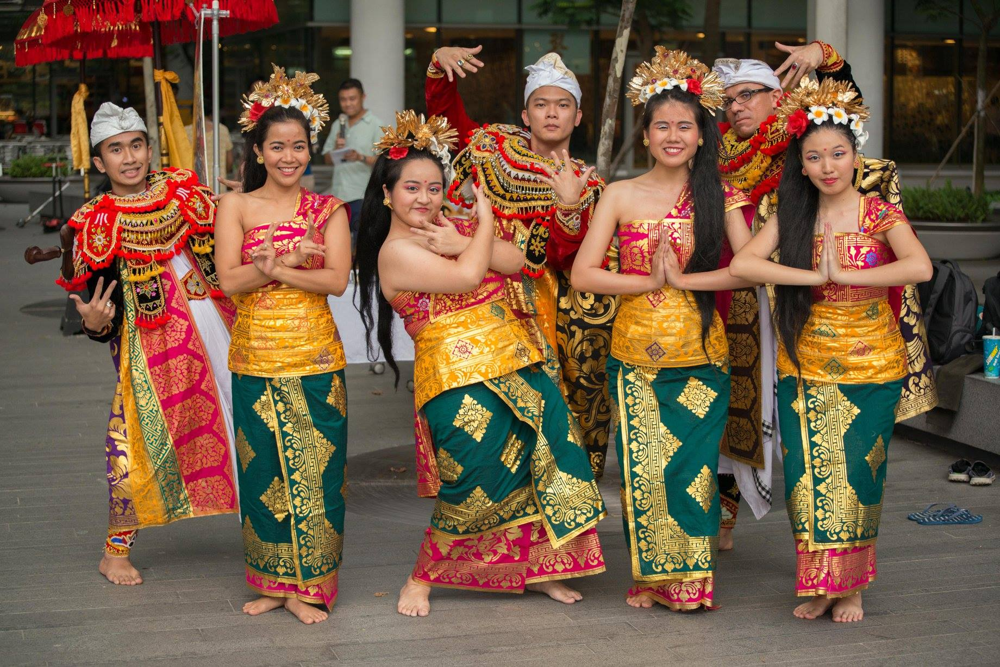

So what did you learn from the past 4 years in NUS? Any advice for your juniors? I will try to answer these questions while reflecting on my NUS journey at the same time. Please note that these are just my opinions and some of you might find them useful. I will try to avoid general stuff such as ‘get out of your comfort zone’ or ‘be proactive’ and be as specific as possible.
Start your own side-project
Having a side project allows us to differentiate ourselves from our peers. We all do the same or similar modules throughout our university life. When companies look at our resume or CV, they may ask ‘why should we hire you and not the next person waiting outside for the interview’?
Here a side project comes to a rescue. It can be about anything that we are passionate about. Since it is something that we are deeply interested in, side project is usually very fun too!
Moreover, the common difficulty that we face is that in order to get a job, usually we need to have a job experience. But how do we get the first job? Here a personal project can help us. There are many online courses that we can learn from such as
Coursera and
Udacity. We can even collaborate with our friends and propose our inventive ideas to start our own company!
Get internship
You can try
Glints or your faculty's portal to find intership listings. The longer the internship, the better. Try to get the 6 months internship as more companies will be willing to accept us. If possible try to aim for start-up companies or small-medium enterprise (SME). Overseas internship such as
NUS Overseas College (NOC) is even better!
I personally felt I learned the most during my internship, both in hard and soft skills. In addition, the experience we get will help us in finding the right job in the future (for those who took HR2002, it is the ‘career with heart’ chapter).
Through internship, we will have much better understanding about a particular job or industry. It may be suitable or not suitable for us, depending on our experience. If it suits us, great! Even if it does not, at least we know that we do not want to work in that particular sector in the future.
Also, we can add to our resume all the achievements or projects that we have done. This will significantly increase the chance of us securing that coveted job after graduation!
Know more people (especially in your major)
It would be dull if we spend most of our time in university for studying. Join orientation camps, get to know your friends in the same faculty and beyond! When it is time to relax try to go out and have fun with our friends. I realize that the most optimum schedule for me is school work during weekday and fun during weekend. Well, ideally. Often I had too much fun during weekday :p
If you feel that university life is not challenging enough, try to be active in a committee or organization. The experience in working with various types of people will hone our abilities as a leader and team player. Having these ‘soft’ skills becomes more important in today’s context. We will be working in teams from various background, education level, age, etc. Technical or ‘hard’ skills are necessary but ‘soft’ skills are often required in solving most problems that we face today.
In summary, life in NUS has taught me many lessons. It is not about the mathematical formula or engineering practices, but the ability to learn new skills and how to juggle many commitments while fulfilling your duty as a student. Moving forward, the challenges will be more difficult. We will be working adults and have even more commitments in our life. It seems daunting but I am excited for it!
